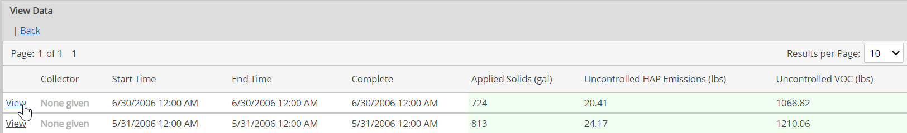
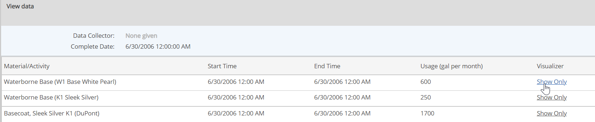
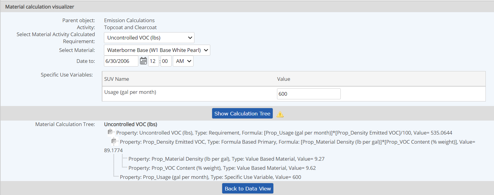
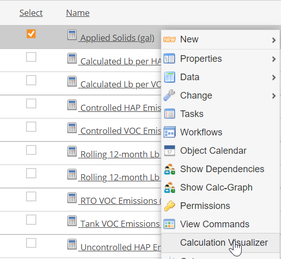

The Material Activity Calculations Visualizer is a tool to help analyze and troubleshoot Material Activity calculations. You can enter trial data and view the results of all intermediate calculations used to derive the final calculated result. Invalid formulas are highlighted and can be easily traced.
The Calculation Visualizer can be accessed from the data display page, either in View or Edit mode.
For an individual Material Activity Calculated Requirement, the Calculation Visualizer can also be accessed on the right click menu.
From Data View mode:
Click the View link in the first column for a data point to view the data entry.

Click the Show link in the Visualizer column for a data entry.

From Data Edit mode:
In the data entry row, click the Show link in the Visualizer column at the far right.
Accessing the Calculation Visualizer from Data View or Edit mode shows the Calculation Visualizer with the data entry values of the selected data point.
Choose the Material Activity Calculated Requirement whose results you would like to see from the dropdown list. Click Show Calculation Tree.
You may enter different test values, select another material, and choose different dates, if desired. If the calculation is not valid because a factor is not available to the calculation, missing factors will be highlighted.

From Requirements View:
Right click any Material Activity Calculated Requirement and choose Calculation Visualizer.

Calculation Visualizer is displayed with the Material Activity Calculated Requirement pre-selected.
The PREV and LAST functions are not supported in Calculculation Visualizer.